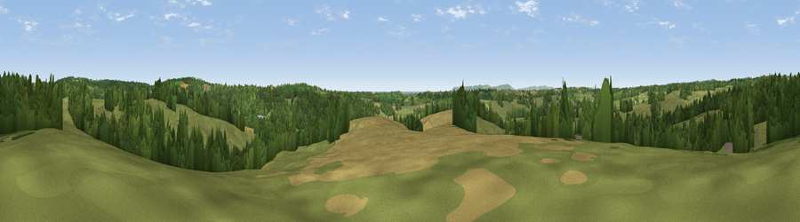

Viewpoint near Ashburnham
#26303 in England · top 35% of its area beats it · near AshburnhamThe view, rendered

A 360° render of this exact spot computed from the terrain model, tree cover and land cover — summer colours, afternoon light, calibrated against photographs of famous viewpoints. Real trees, hedges and buildings will differ in detail.
The panorama
Grey silhouette: terrain skyline in each direction (720 bearings, Earth curvature and refraction included). Dashed green: skyline with trees (+15 m) and buildings (+8 m) as obstacles. Blue strip: how far the ground is visible on each bearing.
Where the view opens
Wedge length = distance to the farthest visible ground on that bearing (vegetation-aware). Rings at 10, 25 and 50 km.
What fills the view
62% grassland · 28% woodland · 9% cropland ·
Angular shares of the visible panorama (visual magnitude), not map area. Landscape diversity 0.40 (0–1 Shannon).
Key numbers
More beautiful places nearby
The staircase of upgrades: each row has a higher view potential than everything closer. Driving times are estimates from straight-line distance, calibrated against real road routing — check an actual route before setting out.
| Place | Direction | Drive | Score |
|---|---|---|---|
| Viewpoint near Ninfield | SE · 3 km | ~6 min | 51.0 |
| Viewpoint near Ninfield | E · 3 km | ~7 min | 53.7 |
| Viewpoint near Catsfield | E · 3 km | ~7 min | 56.8 |
| Viewpoint near Dallington | NNW · 3 km | ~8 min | 58.4 |
| Viewpoint near Dallington | N · 5 km | ~11 min | 67.2 |
| Viewpoint near Brightling | N · 6 km | ~13 min | 68.0 |
| Brightling Obelisk [Brightling Down] | N · 6 km | ~14 min | 69.1 |
| Viewpoint near Three Oaks | E · 15 km | ~27 min | 69.3 |
50.90808, 0.38427 · source: screening · position refined by local search. Computed location — check access rights before visiting.